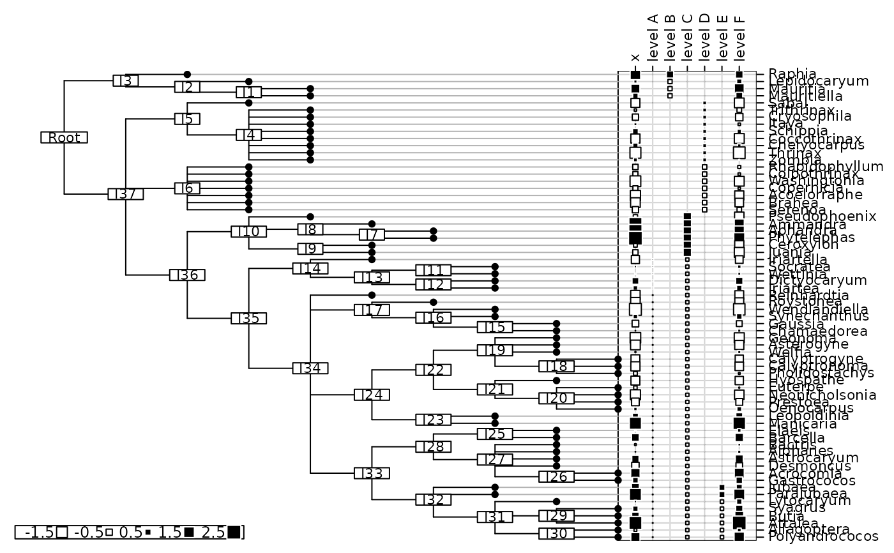

Multi Level Decomposition of unidimensional data
mld.RdThe function mld performs an additive decomposition of the input vector x onto sub-spaces associated
to an orthonormal orthobasis. The sub-spaces are defined by levels of the input factor level.
The function haar2level builds the factor level such that the multi level decomposition corresponds exactly to a multiresolution analysis performed with the haar basis.
Usage
mld(x, orthobas, level, na.action = c("fail", "mean"),
plot = TRUE, dfxy = NULL, phylog = NULL, ...)
haar2level(x)Arguments
- x
is a vector or a time serie containing the data to be decomposed. This must be a dyadic length vector (power of 2) for the function
haar2level.- orthobas
is a data frame containing the vectors of the orthonormal basis.
- level
is a factor which levels define the sub-spaces on which the function
mldperforms the additive decomposition.- na.action
if 'fail' stops the execution of the current expression when
xcontains any missing value. If 'mean' replaces any missing values by mean(x).- plot
if TRUE plot
xand the components resulting from the decomposition.- dfxy
is a data frame with two coordinates.
- phylog
is an object of class
phylog.- ...
further arguments passed to or from other methods.
References
Mallat, S. G. (1989) A theory for multiresolution signal decomposition: the wavelet representation. IEEE Transactions on Pattern Analysis and Machine Intelligence, 11, 7, 674–693.
Percival, D. B. and Walden, A. T. (2000) Wavelet Methods for Time Series Analysis, Cambridge University Press.
Author
Sébastien Ollier sebastien.ollier@u-psud.fr
See also
gridrowcol, orthobasis,
orthogram, mra
for multiresolution analysis with various families of wavelets
Examples
if (FALSE) { # \dontrun{
# decomposition of a time serie
data(co2)
x <- log(co2)
orthobas <- orthobasis.line(length(x))
level<-rep("D", 467)
level[1:3]<-rep("A", 3)
level[c(77,78,79,81)]<-rep("B", 4)
level[156]<-"C"
level<-as.factor(level)
res <- mld(x, orthobas, level)
sum(scale(x, scale = FALSE) - apply(res, 1, sum))
} # }
# decomposition of a biological trait on a phylogeny
data(palm)
vfruit<-palm$traits$vfruit
vfruit<-scalewt(vfruit)
palm.phy<-newick2phylog(palm$tre)
level <- rep("F", 65)
level[c(4, 21, 3, 6, 13)] <- LETTERS[1:5]
level <- as.factor(level)
res <- mld(as.vector(vfruit), palm.phy$Bscores, level,
phylog = palm.phy, clabel.nod = 0.7, f.phylog=0.8,
csize = 2, clabel.row = 0.7, clabel.col = 0.7)
